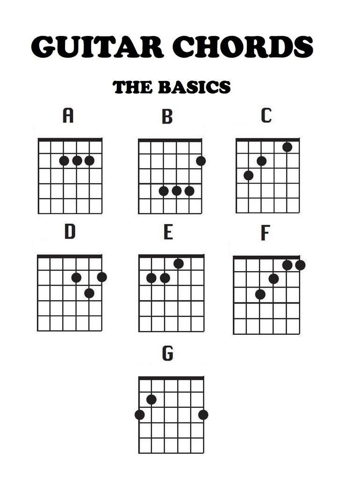

Prima dată când am luat o chitară în mână a fost în urmă cu mulți ani, când eram doar un copil. Primisem o chitară veche de la cineva, dar avea doar 3 corzi, ceea ce o făcea practic inutilizabilă. Nu după mult timp, fratele meu mai mare și-a cumpărat o chitară pe care o luam și eu adesea în brațe, deși nu știam nici măcar cum sună un acord.
Puțin mai târziu, sora mea a început și ea să cânte la chitară. Am încercat să învăț de la ea, dar pentru că nu eram suficient de serioasă, m-am lăsat destul de repede. 😄
Abia în clasa a IX-a, am început să urmăresc tutoriale pe YouTube pentru începători. Pas cu pas, am reușit să învăț să cânt piesele care îmi plăceau și să mă simt mai conectată la acest instrument minunat.
Cum să înveți rapid chitară
By Varan Lidia, Posted on 02.03.2025

Dacă vrei să înveți rapid să cânți la chitară, cel mai important lucru este să începi cu pași mici și să fii consecvent. Nu încerca să înveți totul dintr-o dată! Începe cu acorduri simple, cum ar fi Do, Re, Mi sau La, pentru că sunt cele mai folosite în multe melodii. Practicând zilnic, chiar și 20-30 de minute pe zi, o să vezi rapid progrese. După ce stăpânești câteva acorduri, încearcă să le legi într-o melodie simplă. Cântă aceleași acorduri, dar la ritmul piesei, și vei simți cum îți vine din ce în ce mai ușor.
În plus, nu trebuie să te apuci să înveți cele mai complicate solo-uri imediat. Mai bine, caută tutoriale pe YouTube sau aplicații care îți arată pas cu pas cum să cânți melodii care îți plac. Îți va da mult mai multă motivație și te va ajuta să rămâi concentrat. Chiar dacă unele zile îți vor părea mai greu de trecut, nu te lăsa! Fiecare greșeală este o oportunitate să înveți ceva nou. Așa că, fă-ți timp să te distrezi și să te bucuri de proces!
Cum să îți îngrijești chitara
By Varan Lidia, Posted on 02.03.2025
Pentru a-ți îngriji chitara și a o păstra într-o formă bună pe termen lung, e important să o curăți regulat și să ai grijă de corzile ei. După fiecare sesiune de practică, folosește o cârpă moale pentru a șterge praful și transpirația de pe corpul și gâtul chitarei, astfel încât lemnul să nu se deterioreze.
Schimbă corzile periodic, mai ales dacă au început să piardă din sunet sau se rup, iar dacă vrei ca chitara să rămână la fel de bine acordată, asigură-te că o păstrezi într-un loc uscat și răcoros, departe de umiditate sau temperaturi extreme. De asemenea, poți să o pui într-un suport sau într-o husă pentru a o proteja de zgârieturi sau lovituri. O chitară bine întreținută te va răsplăti cu un sunet frumos și va dura mult mai mult!
Cum să îți alegi prima chitară
By Varan Lidia, Posted on 02.03.2025
Atunci când îți alegi prima chitară, cel mai important este să te gândești la ce tip de chitară vrei să înveți. Dacă ești începător, o chitară acustică e o alegere bună, pentru că nu ai nevoie de amplificator și o poți lua oriunde. În plus, este destul de ușor de cântat pe ea și poți învăța multe melodii de bază. Dacă preferi muzica electrică, atunci poate vrei să încerci o chitară electrică, dar să știi că o să ai nevoie și de un amplificator.
În ceea ce privește mărimea chitarei, e important să alegi una care să ți se potrivească. Dacă ești mai mic sau ai mâinile mai mici, poți alege o chitară de dimensiuni mai mici. Încearcă mai multe chitare înainte să o cumperi pentru a te asigura că îți este comod să o ții și să o cânți. Nu uita că nu trebuie să îți iei o chitară scumpă de la început, mai ales dacă nu știi încă sigur cât de mult o vei folosi. Există multe opțiuni bune la prețuri accesibile care sunt perfecte pentru începători.
Exerciții simple pentru a-ți îmbunătăți rapid tehnica
By Varan Lidia, Posted on 02.03.2025
Pentru a-ți îmbunătăți rapid tehnica la chitară, încearcă să faci câteva exerciții simple care îți vor întări degetele și îți vor spori agilitatea. Un exercițiu eficient este să cânti acorduri de bază, precum Do, Re și La, schimbându-le rapid între ele. Încearcă să faci schimbările cât mai clare și la un ritm constant. De asemenea, poți face exerciții de „alternating picking” (alternarea între degetul arătător și cel mare) pe fiecare coardă pentru a-ți îmbunătăți viteza și precizia. Nu uita să exersezi și pe cât mai multe ritmuri, pentru că ritmul e la fel de important ca tehnica învățării. Practică zilnic, chiar și doar 20-30 de minute, și o să vezi progrese vizibile!
Cum să îți îngrijești chitara
By Varan Lidia, Posted on 02.03.2025
Pentru a-ți îngriji chitara și a o păstra într-o formă bună pe termen lung, e important să o curăți regulat și să ai grijă de corzile ei. După fiecare sesiune de practică, folosește o cârpă moale pentru a șterge praful și transpirația de pe corpul și gâtul chitarei, astfel încât lemnul să nu se deterioreze. Schimbă corzile periodic, mai ales dacă au început să piardă din sunet sau se rup, iar dacă vrei ca chitara să rămână la fel de bine acordată, asigură-te că o păstrezi într-un loc uscat și răcoros, departe de umiditate sau temperaturi extreme. De asemenea, poți să o pui într-un suport sau într-o husă pentru a o proteja de zgârieturi sau lovituri. O chitară bine întreținută te va răsplăti cu un sunet frumos și va dura mult mai mult!
Contactează-mă
Dacă ai întrebări sau sugestii, completează formularul de contact: